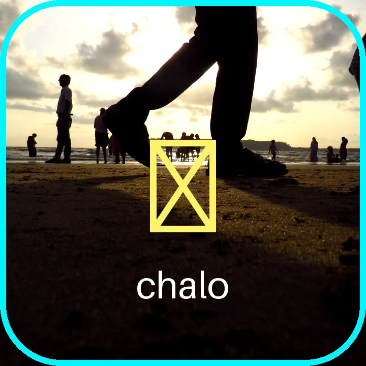
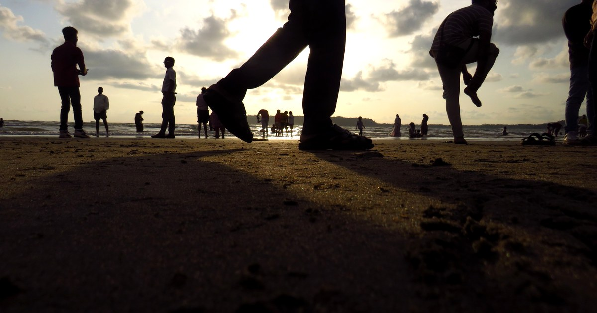
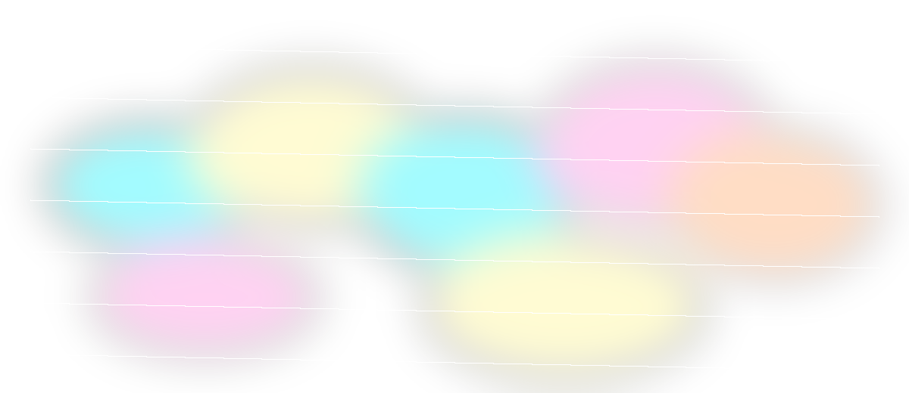
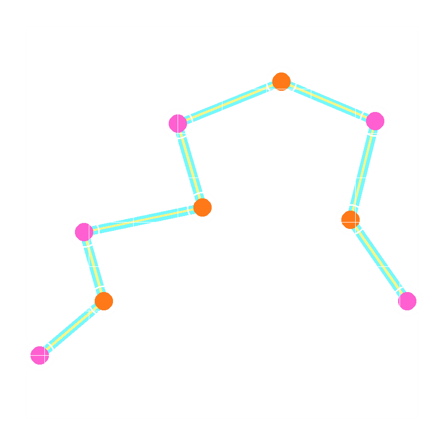
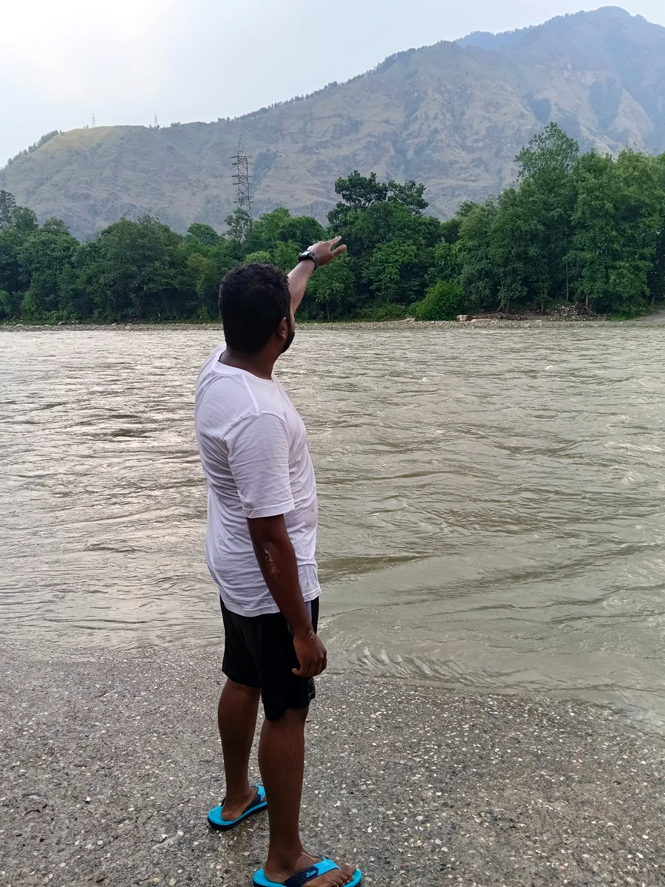

Walks
No plan, only direction. The road decides the first scene.

chaloSCF
Goa-born creator log / walk, talk, vanish, return with footage
Random walks. Real stories. Full chaos.
I walk, I talk, I film everything that feels alive. Roads, rain, beaches, awkward thoughts, sudden plans, and the kind of footage that looks like it escaped before I could explain it.



No autoplay. Pick a track and let the page become a route.
One player. Ten files. Nothing loads until you press play.
Every section is a stop on the walk: the first thought, the wrong turn, the shot that works, the edit that refuses to sleep, the final bit of chaos saved before the battery dies.
No plan, only direction. The road decides the first scene.
Thoughts arrive half serious, half nonsense, fully alive.
One quiet second becomes a picture worth keeping.
Night comes in, headphones go on, the timeline starts arguing.
The part nobody planned becomes the part everyone remembers.

field frame / river side / found directionI am Sergio Fernandes, but here I move as शस्फ: camera in hand, Goa in the background, school-corridor noise still somewhere in my head, and a habit of turning normal walks into tiny films.
I like footage that feels a little unplanned. A face too close to the lens. A road with no grand reason. Rain on a quiet corner. A funny thought that suddenly becomes honest.
A bright road, too much heat, and the first rule of chalo: keep moving until something happens.
The kind of walk where the weather starts the conversation and the camera quietly agrees.
Fast thoughts, rough cuts, sudden jokes, and the strange confidence of recording before knowing why.
Short reels, shaky truth, cinematic Goa, funny cuts, and edits that keep some dust on their shoes.
Follow @chaloSCFHover a stop. Every pin is a video idea wearing shoes.
I take up photography shoots, reels, event videos, edits, thumbnails, brand content, and small visual stories that need a real human eye instead of a stiff template.
I like routes that begin with “let’s just go there” and end with a battery warning.
Sometimes the best shot is the one where I clearly had no idea what I was doing.
At night the footage becomes honest. The funny parts get funnier. The quiet parts get dangerous.
Goa keeps changing light on me, which is rude, beautiful, and extremely useful.